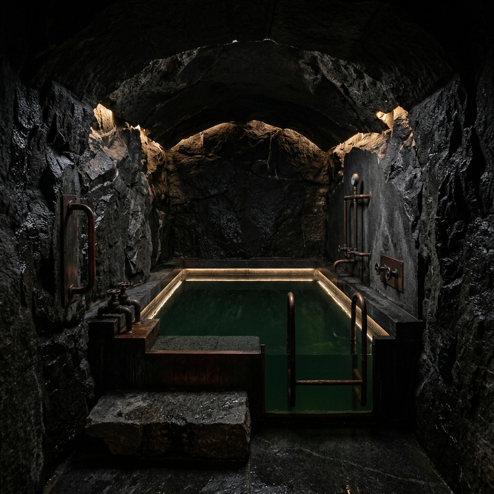
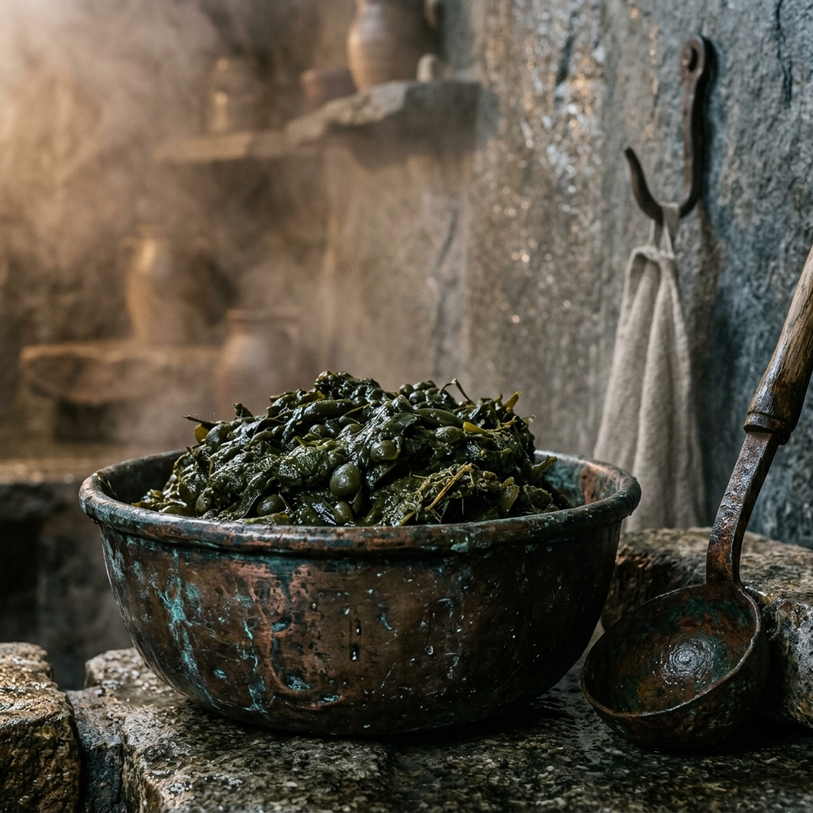
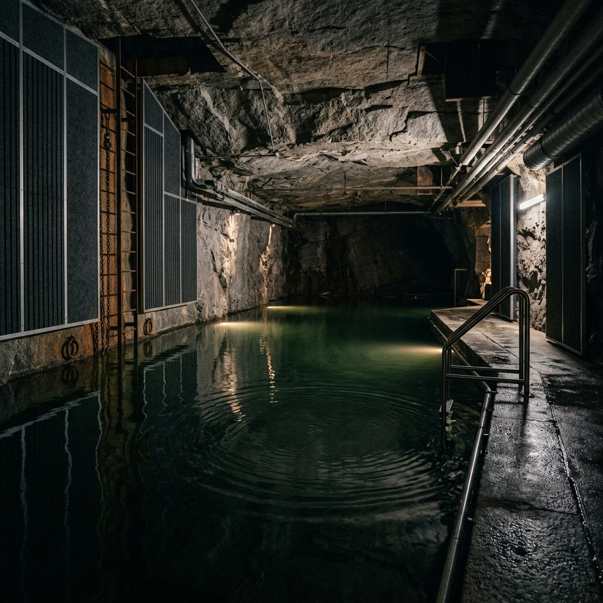

Precision Restorative Science Born of the Sea.
Re-calibrating complex sensory networks through natural high-density marine flotation, warm botanical wraps, and sub-audible dampening.
Traditional clinical environments fail to address the specific, deep-seated sensory fatigue of maritime crew members. By combining clinical vestibular therapy with the ancient chemical properties of the North Sea, we offer a non-pharmacological, physical remedy for occupational disorientation. Our bespoke flotation chambers and mud treatments are designed to trick the nervous system into a state of total, unshakeable stability, allowing the brain's spatial processing centers to finally stand down.

Deep-Sea Buoyancy & Vestibular Gravitational Reset
When an offshore engineer spends months suspended hundreds of feet above the ocean on a vibrating turbine nacelle, the brain constantly calculates micro-adjustments to maintain equilibrium. Upon returning to solid land, this calculation mechanism fails to turn off, resulting in "land sickness" or Mal de Debarquement. Our primary therapeutic tool is the Hyper-Saline Vault, a custom-moulded granite flotation bath filled with water drawn directly from the North Sea, purified via sand filtration, and saturated with Epsom salts to a precise specific gravity of 1.28. At this density, the human body floats effortlessly on the surface without any muscular contraction. Suspended in total darkness and complete silence, the fluid in the semicircular canals of the inner ear reaches a state of absolute hydrostatic equilibrium. With no gravity to fight and no visual horizon to track, the over-stimulated vestibular nerve halts its frantic firing patterns. A single ninety-minute session resets the sensory pathways, allowing the brain to rebuild its mental model of stillness from a true baseline of mechanical quiet.
Thermal Bladderwrack Lamination for Neurological Calming
Our secondary restorative protocol utilises organic, wild-harvested bladderwrack seaweed (Fucus vesiculosus) hand-cut at low tide from the chalk reefs surrounding the Isle of Thanet. Once harvested, the fronds are dried using low-temperature solar dehydrators to preserve their high concentration of marine minerals, alginates, and iodine. We grind this mineral-dense botanical matter into a coarse, heavy paste and heat it to a therapeutic forty-two degrees Celsius. Applied as a full-body pack within our steam-infused subterranean chambers, the warm seaweed gel coats the skin, creating a deep tactile weight that acts as an external sensory anchor. The high-pressure heat dilates peripheral blood vessels, encouraging the rapid excretion of cellular wastes while delivering trace elements directly to the epidermis. As the mud cools slowly over forty-five minutes, its heavy, steady compression simulates the reassuring pressure of deep water without the associated movement, grounding the central nervous system and initiating a profound transition into restorative delta-wave sleep.


Low-Frequency Acoustic Cancellations & Hydro-Resonance
Modern offshore wind turbines emit a continuous, low-frequency hum between ten and fifty Hertz. While barely audible to the human ear, this infrasound vibrates the bones of the skull, causing chronic headaches, high blood pressure, and a persistent state of fight-or-flight tension. To combat this industrial acoustic trauma, our subterranean vault is engineered with active, sub-surface acoustic cancellation technology. Guests submerge their bodies in our deep-resonance pool, where underwater transducer panels emit counter-vibrations modeled on the natural, rhythmic swell of the tide. These gentle, low-frequency pressure waves actively cancel out the residual internal resonance of industrial vibrations. The bone-conduction panels deliver soft, deep auditory patterns that mirror the physical movements of coastal waters, coaxing the brainwaves down from frantic, high-stress beta states into deep, healing theta patterns, completely removing the phantom vibration of the turbine from the patient's physical memory.
Accreditation & Safety
Our clinical protocols and structural facilities adhere strictly to the highest standards of maritime and occupational health. The Tidal Vault maintains full accreditation from the Maritime and Coastguard Agency (MCA) as an approved non-medical recovery facility, recognizing our direct role in restoring the physical endurance of offshore personnel. Our therapeutic staff hold advanced certifications in clinical vestibular science from the British Society of Audiology, ensuring that our mechanical resets are applied safely and effectively. The water drawn from the North Sea into our flotation and resonance chambers undergoes rigorous daily environmental water safety testing, meeting strict microbiological parameters. Furthermore, our hand-harvested bladderwrack adheres to sustainable coastal foraging regulations governed by the Marine Management Organisation, guaranteeing that our organic treatments are as responsible to the Thanet chalk reefs as they are healing to the patient.
View Booking Logistics